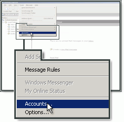
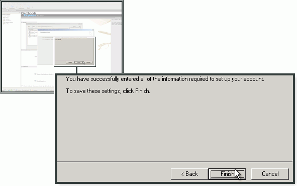
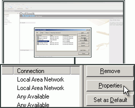

Outlook Express¶
Accedi ad Outlook Express e seleziona Strumenti. Fai clic su Account.
Fai clic su Aggiungi, quindi scegli Posta elettronica.

Digita il tuo nome (il nome sarà visualizzato dai destinatari dei tuoi messaggi).

Indica l’indirizzo e-mail creato nel Pannello di controllo, quindi fai clic su Avanti.

Scegli IMAP come tipo di account.
Come server della posta in entrata (IMAP), indica imap.frugan.it.
Come server SMTP, indica smtp.frugan.it e fai clic su Avanti.

Indica l’indirizzo e-mail e la password che hai creato nel Pannello di controllo e fai clic su Avanti.

Fai clic su Fine per completare la configurazione.
Configurazione del server SMTP¶
Seleziona il tuo account di posta nell’elenco, quindi fai clic su Proprietà.
Seleziona la scheda Server.

Seleziona la casella Autenticazione del server necessaria, se non è già selezionata.

Seleziona la scheda Impostazioni avanzate.

In Outgoing mail (SMTP) (Posta in uscita), indica 465 e seleziona This server requires a secure connection (SSL).
Come Incoming mail (IMAP) (Posta in entrata), inserisci 993 seleziona SSL.
Fai clic su OK.